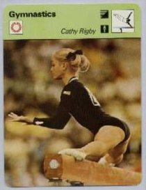

Cathy Rigby (USA)
1970 World B Silver Medalist

Medal Total
World Championships: 1 Silver
Cathy was born on December 12, 1952 and trained at SCATS under coach Bud Marquette. A fifth-place finish in the 1968 AAU Championships earned her a berth on the Olympic team -- and a pet monkey from her parents. Cathy was the first US gymnast to win an individual medal at a World Championships. Rigby was named the Los Angeles Times' Sportswoman of the Year in 1972. Her final meet was the 1972 Olympic Games. After retiring from gymnastics, Rigby did TV commentary for ABC Sports and later starred on Broadway in "Peter Pan."
Competition Results
1965
Santa Monica Gymfest: 1st AA, 1st UB, 1st B, 2nd FX
USGF California Championships (age 10-12): 2nd AA, 1st UB, 2nd B, 2nd FX, 3rd
V
1966
North-South Championships: 3rd V, 3rd UB
Santa Monica Gymfest: 1st UB, 1st B
1967
AAU Jr. Olympic Nationals: 5th AA, 2nd V, 2nd UB, 3rd B
1968
AAU Sr. Nationals: 5th AA, 3rd V, 4th FX, 6th UB
International Invitational for Juniors: 1st AA
Olympic Games: 6th Team, 16th AA
US Olympic Trials: 4th AA
1969
World Cup: 1st AA
1970
California State AAU Championships: 1st AA, 1st UB, 1st B, 1st FX
Chunichi Cup: 5th AA
World Championships: 7th Team, 15th AA, 2nd B
1971
Riga International: 3rd AA, 1st B, 3rd UB, 6th FX
South Africa Cup: 1st AA
World Cup: 1st AA, 1st V, 1st UB, 1st B, 1st FX
1972
Olympic Games: 4th Team, 10th AA
USA-JPN Dual Meet: 1st UB, 1st B, 2nd FX
This page was created on March 17, 2000 and was last
updated on April 10, 2020.
© Gymn Forum